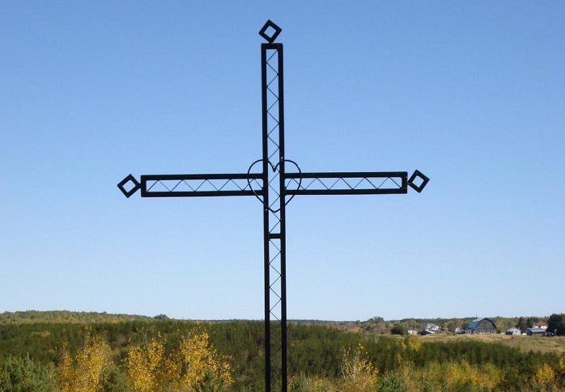

Histoire de la Paroisse Notre-Dame-de-Lorette
Années 30
Selon un article du journal "Le Progrès du Saguenay", publié le 13 mars 1941, les premiers colons sont arrivés dans le Canton Antoine au début des années 30. C'est M. Pitre Bouchard, arrivé en 1931 en se frayant un chemin avec son cheval, qui est le premier habitant de ce qui deviendra la Paroisse Notre-Dame-de-Lorette. Il s'agit d'un vaste territoire de 343 km2 riche en plans d'eau, lacs et ruisseaux, dont la Rivière-aux-rats.
Le 27 juillet 1931, l'abbé Jos Bouchard, de St-Eugène, célébre la première messe dans un abri en branche de sapins et il donne la mission aux premiers colons de fonder une nouvelle paroisse. En 1932, un gros incendie se déclare et brûle la majorité des maisons des premiers colons. Les colons se replient temporairement dans des abris de fortune à St-Eugène et reconstruiront à nouveau le village.
Le 29 juillet 1939, la mission du Canton Antoine est érigée canoniquement en paroisse et est baptisée Notre-Dame-de-Lorette, en l'honneur de Mme Laurette Desjardins, bénévole dévouée épouse d'un ancien président de la Quebec Pulp & Paper Corporation, M. Albert Stewart McNichols, lequel aurait fourni à deux reprises le bois pour la construction de l'église. À l'automne 1939, l'abbé Maurice Larouche réunit les paroissiens pour la construction de la première église, selon les plans de l'architecte Léonce Desgagné. Chaque famille devra faire sa part lors de la construction.
Années 40
Au mois de mai 1942 l'église est terminée grâce à une grande corvée à laquelle toutes les familles ont participé. Le presbytère est aussi complété et les paroissiens sont contents de leur travail. Une salle paroissiale sera installée au sous-sol. C'est l'abbé Henri Larouche qui fera l'inauguration de l'église en 1944. Cette même année, on compte 4 écoles pour 90 enfants et une Caisse populaire Desjardins y est ouverte.
Un pont couvert, le pont Paquet, est érigé en 1943 au-dessus de la Rivière-aux-foins. Il a été remplacé dans les années 1980 par un pont en béton.
Années 50

En 1951, la Fabrique achète un orgue électrique pour l'église. C'est Mme Jeanne-Mance Paquet qui en sera l'organiste, et ce jusqu'à nos jours. Le clocher actuel de l'église a été construit en 1955 et trois belles cloches y seront installés, en remplacement de la première cloche. Tous les paroissiens participent à l'amélioration et à la décoration de leur église dont ils sont si fiers.
En 1952, le gouvernement apportera son aide pour construire un couvent et, en 1957, un collège pour garçon. Le couvent sera agrandi en 1961. Aujourd'hui, les jeunes de la paroisse vont à l'école secondaire à Dolbeau-Mistassini.
Années 60 à aujourd'hui
